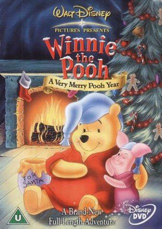

IMDB-Wertung: 6.8 / 10
IMDB-Wertung: 6.8 / 10  Metascore:
Metascore: 
Ring in the season with Winnie The Pooh in a holiday adventure.
Alternativ: Winnie the Pooh: A Very Merry Pooh Year
 IMDB-Wertung: 6.8 / 10 Metascore:
Ring in the season with Winnie The Pooh in a holiday adventure.
Jahr: 2002
Dauer: 61 Minuten
FSK: 0
Land: USA Studio: Walt Disney Home EntertainmentTonspuren:
Untertitel:
Auflösung: SD (480x368) Größe: 700 MB
Genre: Drama, Komödie, Fantasy, Animation/Trick, Familie, Musical
Regisseur: Gary Katona, Ed Wexler, Jamie Mitchell
Drehbuch: Brian Hohlfeld
Soundtrack: Steve Nelson, Thomas Richard Sharp, Mark Watters
Darsteller:
 Jim Cummings als Winnie the Pooh / Tigger
Jim Cummings als Winnie the Pooh / Tigger Peter Cullen als Eeyore
Peter Cullen als Eeyore John Fiedler als Piglet
John Fiedler als Piglet Kath Soucie als Kanga
Kath Soucie als Kanga Michael York als Narrator
Michael York als Narrator Paul Winchell als Tigger (segment
Paul Winchell als Tigger (segment Datei: X:\Kinder Disney HD\Winnie Puuh\Winnie Puuh - Honigsüße Weihnachtszeit (2002, FSK0, 480x368).avi seit 25.03.2018
Festplatte: Kinder-Filme+Trick
 Es gibt insgesamt 8 Filme in der Gruppe 'Kinder Disney HD\Winnie Puuh'
Es gibt insgesamt 8 Filme in der Gruppe 'Kinder Disney HD\Winnie Puuh'